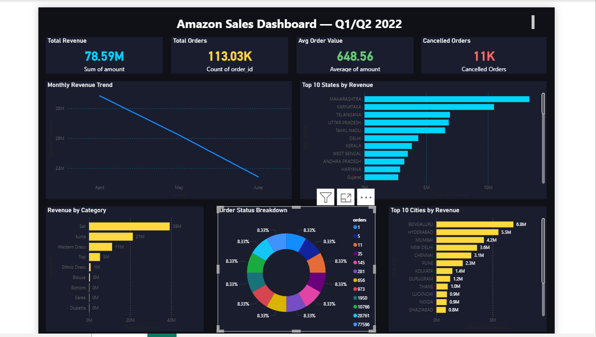
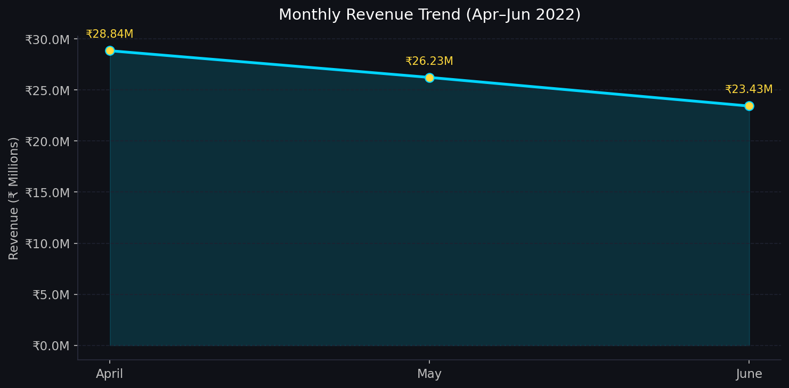
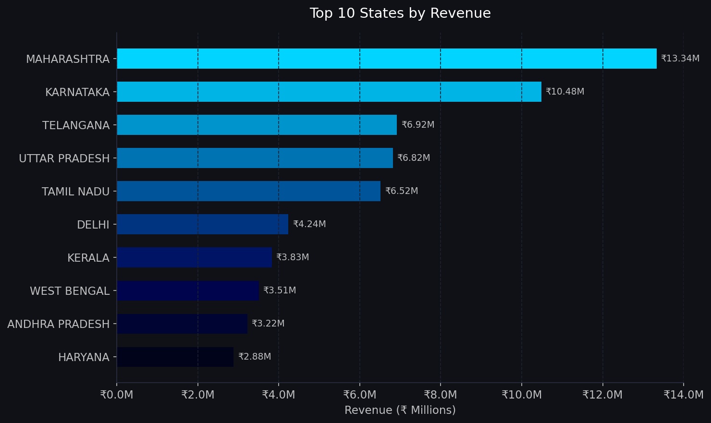
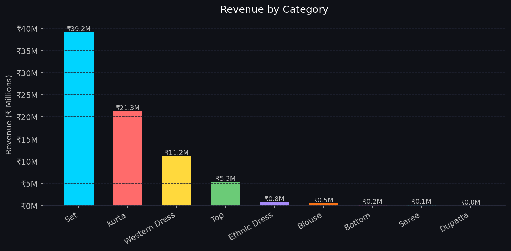
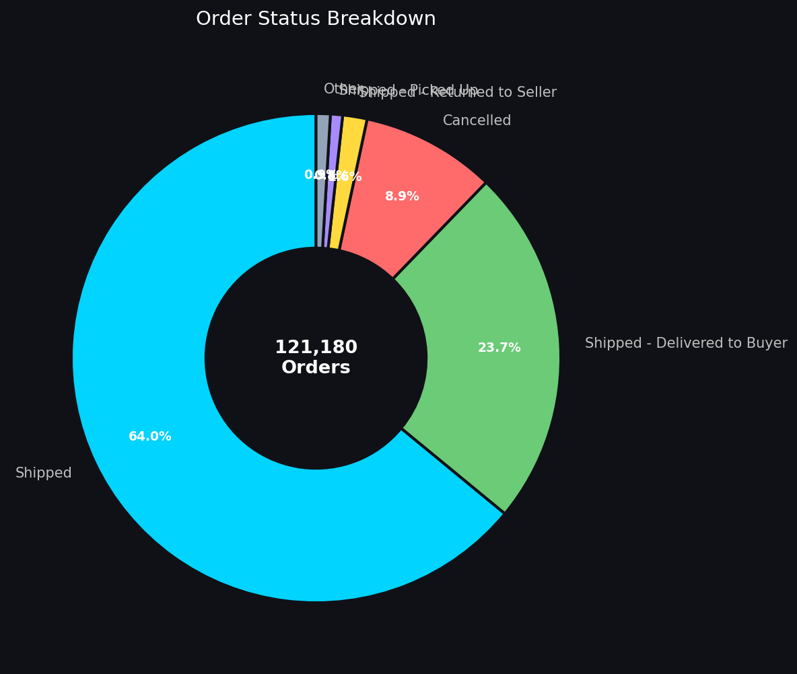
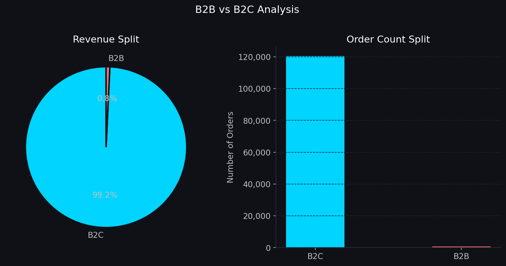
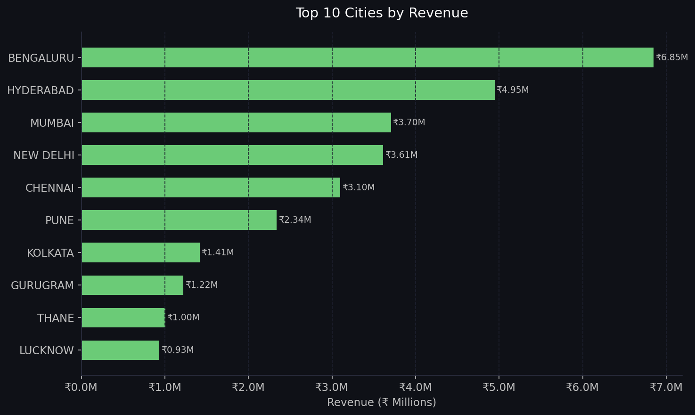

End-to-end data analytics project analyzing 1,21,180 Amazon orders worth ₹7.8 Crore using Python and Power BI

Interactive Power BI Dashboard — Amazon India Sales Apr–Jun 2022
This project analyzes real Amazon India sales data from April to June 2022. The goal was to build a complete analytics pipeline — from raw messy data all the way to an interactive Power BI dashboard — that provides actionable business insights for decision makers.
The dataset contained 1,28,975 raw records which were cleaned down to 1,21,180 valid orders after removing cancelled transactions with no revenue and fixing data quality issues.
The business needed answers to these questions:
The raw data had no trend analysis — just individual order records.
No geographic breakdown existed in the original data.
Cancelled orders were mixed with valid orders — no clean separation.
Category performance was buried in 1,28,975 rows of raw data.

Monthly Revenue Trend

Top 10 States by Revenue

Revenue by Category

Order Status Breakdown

B2B vs B2C Analysis

Top 10 Cities by Revenue
April: ₹2.88 Cr → May: ₹2.62 Cr → June: ₹2.34 Cr. This signals a serious business concern that needs immediate attention from the sales and marketing team.
Maharashtra (₹1.33 Cr), Karnataka (₹1.05 Cr), and Telangana (₹0.69 Cr) dominate. This geographic concentration is a major risk if these markets slow down.
"Set" (₹3.92 Cr) and "Kurta" (₹2.13 Cr) together account for 77% of all revenue. The business is heavily dependent on these two product lines.
8.88% cancellation rate + 1.61% return rate = 10.49% of all orders never complete. This represents significant revenue leakage that needs operational fixes.
B2B orders are only 0.75% of revenue (₹5.91L). With the right wholesale strategy, this segment could be scaled 10x without acquiring new retail customers.
Downloaded Amazon Sales Report dataset with 1,28,975 rows and 24 columns covering orders from March to June 2022.
Removed 6 irrelevant columns, fixed date formats, handled 7,795 missing revenue values, fixed mixed data types — achieved zero missing values.
Calculated 6 core KPIs: Total Revenue, Monthly Trends, State Performance, Category Revenue, Order Status Breakdown, and B2B vs B2C split.
Generated 6 professional dark-themed charts including line charts, bar charts, and donut charts saved as high-resolution PNG files.
Built a fully interactive Power BI dashboard with 4 KPI cards and 5 charts allowing drill-down analysis by state, category, and time period.